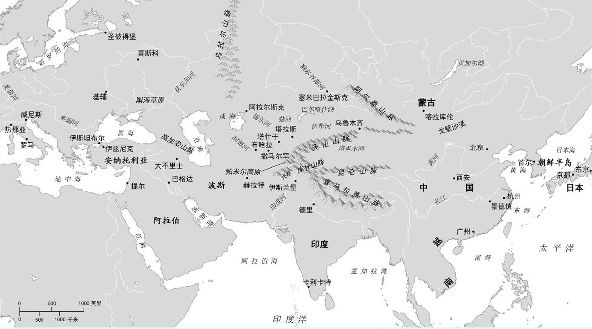
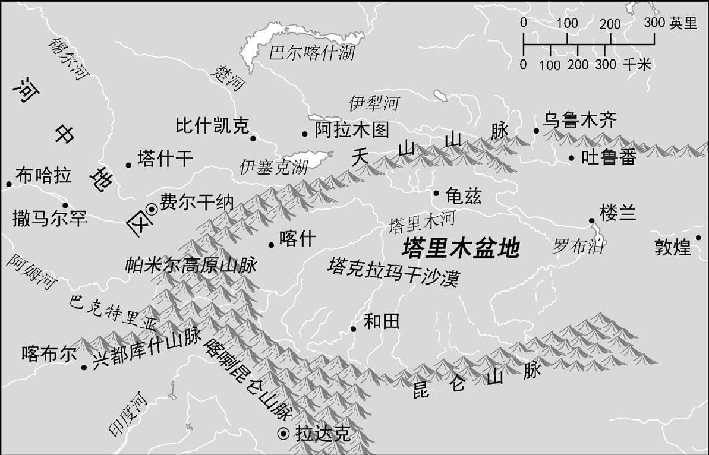

6月的华盛顿哥伦比亚特区跟丝绸之路上的很多地方一样炎热，但不像中央欧亚的无树大草原和沙漠那样干燥，那里的群山挡住了来自太平洋和印度洋的湿气。华盛顿这里的湿度更像印度，令亚历山大和巴布尔 [1] 等征服者无法忍受，也像中国的长江下游流域，那里是历史上的丝绸生产中心。因而2002年6月的华盛顿天气不算反常，彼时史密森学会 [2] 正在国家广场举办一个以“丝绸之路”为主题的民俗艺术节。
在国会大厦和华盛顿纪念碑之间的狭长公园临时搭建了一个帐篷，开幕式就在那里举行。由于广场刚刚改造完毕，换气扇吹进来的风里夹杂着尘土、干草，甚至还有骆驼的气味。学者、记者、使馆代表及一众特邀嘉宾都坐在折叠椅上汗流浃背，台上就座的贵宾也是大汗淋漓：大提琴演奏家马友友虽燥热难忍，却对自己参与组织的艺术节成果露出了满意的微笑；先知穆罕默德的后人、什叶派伊斯玛仪派领袖阿迦汗也是艺术节的资助人，他满脸通红却神情凝重。唯有演讲嘉宾美国国务卿科林·鲍威尔清爽利落地穿着衬衫、打着领带，潇洒地走上舞台，看起来颇为凉爽。“9·11”袭击过后不到一年，美国军队正占领着阿富汗（那里是丝绸之路的中枢），还在几个街区之外的宾夕法尼亚大道上酝酿着对伊拉克（丝绸之路沿线的重要一站）的开战计划。当时在华盛顿出席开幕式的诸位知道鲍威尔是布什政府中唯一一个反对入侵伊拉克的重要成员，因而向他致以热烈的欢迎。鲍威尔后来改变了立场，但那天他说到丝绸之路艺术节的主题“连接文化，建立信任”时，还是很有说服力的。
以哥伦比亚特区作为探访丝绸之路的起点难免显得奇怪。但在今人看来，丝绸之路——或陆海双线丝路——的概念早已远远超越了锦缎和商队，而马友友和史密森学会的组织者都了然于胸，在其最广泛的意义上，丝绸之路所代表的观念是，只有通过货物、思想、艺术和人群本身的交换和流动在遥远的聚居地之间建立联系，人类才能得到最繁荣的发展。这种对人类共同世界史的理解强调不同民族之间的交流与互动，而不是差别和冲突。这一观点当然有意识形态的成分，但也不乏实证性考古学证据和史学文本的支持：在最早期的欧亚大陆人类栖息地上，我们注意到跨大陆迁徙和贸易的迹象；晚些时候，在亚洲、欧洲和撒哈拉以北的非洲若干地区游牧和农耕社会相辅相成的发展中，我们看到了那种交流的协同效应。农业、畜牧业、冶金术和其他技术、音乐、绘画艺术，甚至宗教和政治思想，虽形式多样、异彩纷呈，但都不是互不往来的文明各自独立的发展成果，而是欧亚大陆共同布局发展的不同面相。
显然，古代的跨大陆融合在程度上无法与如今的全球紧密连通相媲美。但就其性质而言，历史上的丝绸之路所实现的成就，与今日“全球化”的成果大同小异。而如果没有始于数千年前、长期持续的交流——尽管其数量和速度不一定可观——把我们称为欧洲、西南亚（中东）、波斯、印度、中国以及东南亚和中亚的这些地方之间连成网络，我们生活的世界会大不一样。
非丝又非路
传统上，“丝绸之路”一词用于指代东亚和地中海之间、贯穿欧亚大陆中心的一条或多条道路，所谓欧亚大陆中心，如今被冠以不同的地名：中央欧亚、中亚、内亚、河中地区，有时则特指那些名唤“斯坦”的国家［阿富汗（Afghanistan）、哈萨克斯坦、乌兹别克斯坦、塔吉克斯坦、吉尔吉斯斯坦和土库曼斯坦］。我们想象着一队队负重的骆驼沿着那条路走过草地、沙漠和山口，在绿洲城镇歇脚，那里的集市充斥着丝绸和香料。然而虽说这些生动形象早已深入人心，“丝绸之路”到底是什么或位于何处却十分含混。
1997年11月，当时的美国第一夫人希拉里·克林顿对哈萨克斯坦、乌兹别克斯坦和吉尔吉斯斯坦进行了友好访问。为准备在吉尔吉斯斯坦的演讲稿，克林顿夫人的一位高级助理打电话到乔治城大学问我：“比什凯克是丝绸之路上的城市吗？”这位官员想要一个非此即彼的简单答案，但问题并不简单。丝绸之路可不像66号公路那样，是一条贯穿大陆的高速公路。要说清什么东西是否位于丝路沿线，取决于我们在地理上和时间上

图1 欧亚大陆与丝绸之路
如何看待丝绸之路的历史。如今身为吉尔吉斯斯坦首都的比什凯克是由俄罗斯殖民者在19世纪创建的，苏联时期为纪念一位布尔什维克将军而改名为伏龙芝，直到1991年后才恢复早先的名字。如此看来，这座城市似乎过于年轻，无法被归为“丝路”城市。此外，它坐落在地图绘制者们通常所画的丝路大概位置的北方；比什凯克更像是大草原和大山之间的十字路口，而人们一般会把撒马尔罕或布哈拉等古代绿洲城市作为丝绸之路的象征。然而否定比什凯克在丝绸之路上的地位，不仅让克林顿夫人的演讲撰稿人失去了一个现成的话题，还可能会误导，让人们错以为游牧民族频繁穿行的大草原路线和以俄罗斯人征服中亚为标志的现代历史时期都与丝绸之路的故事无关。
“丝绸之路”一词的首创者是德国旅行家和地理学家费迪南·冯·李希霍芬男爵（他是史努比克星、“红男爵”曼弗雷德·冯·李希霍芬 [3] 的伯父）。实际上，冯·李希霍芬在1877年的一次讲座上，以及他的多卷本历史地理学著作《中国》（1877—1912）中，同时使用了这个词的单数（Seidenstrasse）和复数（Seidenstrassen）形式。他用这个词指代中国的丝绸离开汉帝国（公元前206—公元220年）抵达中亚的多条路线，汉朝则从那些路线中学到了一些西方地理知识。李希霍芬的“丝绸之路”概念并不包括汉朝之后的时代，但他确实详细讨论了后期的其他路线以及除丝绸之外的其他货物的交易；此外对他所谓的Handelsverkehr，意即商业交通或贸易路线，他也论证了其伟大的历史和文化意义。因此，尽管叫法不同，狭义的“丝绸之路”概念的提出者也对如今我们简称的“丝路”所涵盖的跨欧亚交易这一普遍现象不无兴趣。
第一个将“丝绸之路”用在标题中的人是另一位德国地理学家奥古斯特·赫尔曼，他在20世纪初期出版了有关这一主题的几本专著和地图集。他完成于1915年的论文的标题“从中国到罗马帝国的丝绸之路”突出了丝绸之路概念的另一个常见但误导性的意义，时至今日，这仍然牢牢盘踞在人们的头脑中：丝绸之路的重要意义主要在于把中国和地中海流域，即“东方”与“西方”联系在一起。这一说法关注跨欧亚贸易的终点，是可以理解的，实际上关于这段较早时期的最佳史料也都以中文、希腊文和拉丁文写成。此外，在如今中国的领土上发现古罗马的玻璃，或是读到罗马贵妇们穿着来自赛里斯 [4] 的纯丝绸翩翩而行，这些之所以会让我们大吃一惊，恰恰是因为两地相隔如此遥远。但只关注丝绸之路的两端却难免错失要领，表现在如下几个方面。
首先，欧亚跨大陆交流——这一现象被概括为“丝绸之路”一词——的主要意义并不全在于丝绸贸易本身。实际上，横跨欧亚大陆的贸易涉及多种货物，也有许多思想观念在此间传播，其中的一些（驯养的马、棉花、纸以及火药）要比丝绸的影响大得多。此外在丝绸不再是主要贸易品之后，远距离交易仍然持续了下去。另一方面，中国与地中海以东的中亚伙伴之间的丝绸纺织品贸易丝毫没有衰退，一直持续到19世纪，其重要性也没有削弱；在满族人统治的清帝国将版图扩张到中亚，将中国领土增加了六分之一的过程中，除了其他贡献，它还是主要的资金来源。
我们也不应认为丝绸之路只涉及跨越大草原路线、发生在大陆中央的东西方交流：这样就忽略了如今的印度北部和巴基斯坦地区，那里不仅是大多数汉朝——罗马贸易的中转站，而且还向欧亚大陆的商品市场贡献了棉纺织品、向其观念世界贡献了佛教这样重要的内容。同样，历代波斯帝国不仅促进和管理丝路贸易并从中征税，还通过他们对特定物品的需求和流向东西方的文化贡献，对丝绸之路产生了重大影响。此外在若干个世纪，波斯语都是丝绸之路的通用语言。
狭义的丝绸之路，作为位于中国和罗马之间的东西方路线，还掩盖了另一个事实，即它不是一条“路”，而是将许多货仓连接起来的一系列路线。史学家们更倾向于把丝绸之路看作一个网络，而非一条线状的道路；像课本里常见的做法，只画几条穿过欧亚大陆中心和印度洋的水平线来标示丝绸之路，会造成错误的印象。
最后，关注城镇化的农耕文明间的接触而忽略“其间的地带”——这是英国探险家和政治家罗里·斯图尔特的说法，这反映了欧亚大陆的农民和城市人口对于中央欧亚地区的游牧人口的古老偏见。尽管局外人往往把这些人称为蛮族，实际上他们却是丝绸之路贸易主要的历史推动者和促进者——他们是“最初的全球化者”，同时也是征服者。举例来说，公元前2100—前2000年从欧亚大陆大草原出口的铜矿，为美索不达米亚和伊朗高原的青铜时代冶金革命供给了原料。战车武士以及战车本身的技术也遵循了相同的路线。还可以举一个文化的例子：如今欧洲和亚洲乐队中的很多弹拨和弓弦乐器，其原型都是大草原上养马的各民族首先发明或在其帮助下发展而来的，并由中央欧亚的游牧民族传播到整个大陆。
中央欧亚的风土人情
中央欧亚这个地区对我们非常重要。究其原因，当然是因为丝绸之路跨越其间，但也因为中央欧亚动荡的历史，特别是游牧民族的活动及其与农耕国家的互动——也就是大草原与播种之地间的关系——塑造了跨欧亚大陆的交易。从史前时期开始，说着伊朗语、突厥语、蒙古语和其他语言的部落在西至黑海，东抵中国西藏和蒙古的大草原、沙漠和山区维持着牧民经济，与旧世界的所有定居性农耕文明毗邻而居。农民与游牧者居住地的环境差异是影响二者关系的一个重要因素。
中央欧亚的环境可以大致描述为一系列的生态区。最北端在西伯利亚北部的北极圈内，是永久的冻土地带，只有最吃苦耐劳的放牧驯鹿的牧人和猎捕野生驯鹿的猎手才能定居在那里。冻土之南是北方针叶林带，那一大片森林主要种植着松柏目植物，环绕着地球上（除海洋外）与西伯利亚同纬度的中国东北、加拿大和新英格兰北部等地区，其南侧边缘逐渐混入落叶林。鉴于这个地区不适宜农业或畜牧养殖，针叶林地带对丝绸之路历史的主要贡献是毛皮：生活在这些北部森林的水貂、白鼬、紫貂、狐狸、海狸等哺乳动物出产厚实浓密的毛皮，欧亚大陆对此的需求经久不衰。蒙古帝国的创建者成吉思汗就是靠卖掉其结婚贺礼中的一件貂皮大衣，巩固了他的首个重要政治同盟，最终推动他走上征服世界之路。近代早期，全球对毛皮的需求驱动着俄罗斯挖陷阱捕杀动物的猎人们跨越西伯利亚一路向东，直抵太平洋和清帝国的边界，刺激了对如今的俄罗斯远东地区的定居和控制，就像法国和其他欧洲捕兽人横穿加拿大挺进西部一样。清帝国的统治者从西伯利亚和加拿大两地购买毛皮——“毛皮之路”因此而延伸到了美洲。
在北方针叶林带之南，绵延着欧亚大陆的半干旱草原，俄语称之为“steppe”。大草原上邻近河流的地方因为有灌溉水源，农耕出产丰饶。然而在大部分地区，人们在草原上要靠养殖家畜维生，还要定期将牧群转场来避免过度放牧。因为此地以干旱气候为主，地势平坦，流经的河流或贯穿的山脉相对稀疏，大草原也利于迁移。马车队无须硬路面便可前行，马匹和其他放

图2 中央欧亚
牧牲畜在自己的天然栖息地轻松迁移：硬地之上到处覆盖着它们喜爱的食物，就像一张硕大无边的餐桌。
大草原之南并与其犬牙交错的便是欧亚大陆的沙漠带，从蒙古南部和中国北部的戈壁开始，向西穿过甘肃，进入新疆的塔克拉玛干沙漠和西藏的沙漠高原，转而向南。在帕米尔高原以西，干旱的土地再次出现在如今的乌兹别克斯坦，并向南延伸到咸海和里海，沿着伊朗北部最终进入阿拉伯半岛和北非撒哈拉地区。沿途的某些沙漠是流沙聚积而成的，而另一些沙漠则有着硬质多石的地表。尽管水源稀缺，在这样的地域旅行却相对快捷高效。控制着沙漠路线的行政组织往往维护着水站和客栈，向旅行者提供帮助，并从中获益。
中央欧亚绵延着若干山脉，最著名的有昆仑山、天山、喀喇昆仑山和帕米尔高原，它们都是喜马拉雅地块的支脉，后者雄踞于大陆中央，并对其气候产生了决定性影响。这些山脉把中央欧亚和太平洋与印度洋阻隔开来；这与高地上的高气压相结合，导致该地区雨水匮乏。群山中流出的水系，包括阿姆河（奥克萨斯河）、锡尔河（贾沙特斯河）、塔里木河和额尔齐斯河，遂成为农业用水的仅有来源。丝绸之路中段沿线的主要城市都位于这些水系附近。中央欧亚的这些河流虽可用于地方运输，却没有一个汇入大海。旅行者需要越过群山进入印度北部（今巴基斯坦）才能到达阿拉伯海，从那里转向红海、波斯湾，并继续前往地中海。这条路径，而非陆路，才是东亚货物抵达罗马和其他地中海终点站最常用的通道。
这样的地理格局与中央欧亚的人类社会和政治，以及丝绸之路的经济往来与其他交流有何相关？几个世纪以来，学者们痴迷于一个历史模式：在某些时间点，游牧部落的同盟会合一处烧杀劫掠，从农业国勒索贡品或入侵并征服那些国土。草原战争有时会导致人口跨越大草原，像撞球一样来回往复地大迁徙；有时草原帝国又从大陆的一端扩张到另一端。学界对这些周期性的“蛮人爆发”提出过若干种解释。最初的理论将其归因于中央欧亚各民族的固有特性以及他们栖息的恶劣环境。
14世纪的阿拉伯学者伊本·赫勒敦在其《历史绪论》中指出，环境不但会影响人的性格，而且究其根本，历史的原动力和大周期也源自人们生活的地点和方式。体量庞大、充满“集体感”的新的部落同盟走出大草原和沙漠，统治了农业地带。这些年轻的王朝起初由于吸收了奢华尊贵的农业文明而变得强大，最终却在优柔的境况下日显老态，继而被充满活力的新的沙漠民族所取代。这种宏大的解释体系如今已经过时了。然而伊本·赫勒敦事实上是基于伊斯兰世界——在那里，军国主义的部落政权像走马灯一样轮转——的多个历史实例提出这些论点的，因此不能简单地加以摒弃。
18世纪的英国史学家爱德华·吉本也从另一个角度概括了“斯基泰人和鞑靼人”（他对欧亚大陆游牧民族的通称）的特性。他在《罗马帝国衰亡史》中写道：
吉本解释说，鞑靼人军事上的勇猛善战源自其以奶制品和肉类为主的膳食、大草原的居住环境，以及他们的狩猎习惯。
现代学者倒是较少采取预设立场，但他们也认为环境在塑造中央欧亚的社会、经济和政治动态过程中起到了主要的甚至是决定性的作用。大草原、沙漠和山地的环境意味着中央欧亚的游牧民族以放牧经济为生，因而缺乏谷物、其他作物，以及他们需要或渴望拥有的很多制成品和奢侈品。不过他们的确拥有马匹和马术军事技能，如此一来，在与马匹不盛的炎热南方农耕国家作战时，他们就能够占据优势。由此产生了这样一种动态，即游牧民族通过贸易或劫掠的方式——往往是二者结合——与定居的农民和城市居民互动。由于干旱土地存在着过度放牧的危险，游牧民族通常以较小的家庭群体规模生活和放牧。他们与较大的家族群体——氏族和部落——保持着联系，又有共同的神话故事和历史记忆将他们联系成更为庞大的共同体，相当于种族或民族。在危机来临或机会浮现的时刻，游牧民族可以在统治精英的领导下形成军力强盛的大型帝国联盟，此时其共同的标签具有种族和政治的双重意义，例如匈奴人、突厥人或蒙古人。这些联盟可以统一广阔的大草原领土，征服南方的农耕国家。如此说来，游牧民族的社会政治组织、个人的坚强意志、动员作战的便利性以及杰出的马术技能的确是由他们所在的环境塑造的——吉本的这一论断没有错，但他认为游牧民族这种非理性人类活得像自然状态下的四足兽，则当属无稽之谈。有一种错误的倾向，就是把出身城市——农耕王国的开疆辟土的统治者（例如亚历山大大帝）看作战略奇才，而把游牧帝国的征服看成自然灾害。事实上应该认识到，从公元前2千纪到公元18世纪，欧亚大陆的游牧社会及其领袖在自然和地缘政治环境中从容运作，利用他们相对于定居社会有限但高效的军事优势，谋求经济方面的资料或利益，有时还力图扩张领土——这才是更合理的观点。
因为游牧民族的放牧生活方式与城市或农庄如此不同，另一种常见的做法是在大草原的“野蛮”民族与“文明”社会各民族之间画一条鲜明的分界线。吉本称放牧人与务农人有着本质区别，即反映了这种倾向，但在更早时期，这种看法在欧亚大陆边缘的其他地方也一样盛行。看看中国的史学奠基人司马迁（公元前145—前86年）是如何描述匈奴游牧民族的吧：
公元4世纪的罗马史学家阿米阿努斯·马尔切利努斯对匈奴的描述更是彻头彻尾的种族主义：
不过关于中央欧亚地区各民族的负面形象，倒也不必在那么久远的史料里去挖掘。只需想一想迪士尼电影《花木兰》中的单于那个形象也就够了：他黝黑笨重，邪恶的双眼闪烁着凶光，带领着大群部下蜂拥塞路。
内亚各帝国与丝绸之路
这些黑暗的阴影穿越时代投射而来，连如今的迪士尼公主们都惊吓不已，使得重新思考中央欧亚各民族和政治组织的历史作用变成了一个难题。但中央欧亚的游牧民族及其政体不只是四处劫掠的征服者。相反，他们在多重意义上对跨欧亚连通起到了重要作用。
首先，大草原与耕地之间的分界线并不像吉本、司马迁或阿米阿努斯所暗示的那样泾渭分明，实际上，那条分界线在政治和文化上游移不定。游牧民族与绿洲城市的关系通常十分密切，游牧民族为绿洲提供保护并促进贸易，当然，以牲畜交换农产品对双方都有利。某些半游牧民族甚至每年都会短期务农。希罗多德就曾提到过黑海附近“务农的斯基泰人”。即使在远东，中国的长城看起来似乎在中国农民和北方放牧者之间设立了难以跨越的屏障，但在中国任何时代的史料里，我们都能从字里行间发现持续进行的贸易、军事联盟、通婚以及各种语言和文化融合，处处揭示了双方的差别没有那么壁垒森严。
司马迁记述了一个中国王侯，他与游牧民族西戎结盟，攻打中国周朝的王 [6] ；周朝后来的一个王又与“野蛮人”（实际上是他的姻亲）结盟，一起攻伐中国的郑国 [7] ；他还记录了义渠部落如何修筑城墙抵御秦国 [8] ；以及秦国太后与义渠王不清不白地生了两个杂种儿子 [9] ——如果双方存在着绝对的界限，这么做可不容易。关于如今的中国北部与蒙古的这种早期文化杂糅，最有说服力的例子就是中国的赵王下令赵国人不得再穿长袍，改服便于骑射的长裤 [10] 。人们在读司马迁的记述时，不禁会怀疑“中国人”与“野蛮人”之间的所谓区别是否只是由司马迁本人这样的评说者提出的事后分析。而在整个欧亚大陆，各个伟大农业王国和帝国普遍都曾被北方部落征服者长期控制，后者因而进入了俄罗斯、安纳托利亚、美索不达米亚、波斯、印度、中亚、中国、高丽，以及其他各地的历史。中央欧亚的游牧民族与其从事农耕的邻邦之间并没有确凿的边界；生活在中央欧亚地区的人既不是完全居无定所，也不总是畜牧者；他们与城市和农业社会建立了多种关系，也不全是诉诸暴力的民族。他们在欧亚大陆的历史上扮演着举足轻重的角色。
对于丝绸之路而言最重要的是，中央欧亚人以多种方式参与并影响了跨大陆的经济和其他交流。即使在没有统一成大型联盟的时期，普通的游牧人也在边境市场上买卖交换，出入绿洲，在集市上出售牲畜和其他畜产品，并保护商队——或者说向其勒索保护费。但大型游牧帝国对丝绸之路上的交流尤其重要。它们需要收入来弥补把大部分生产性放牧人口转向军务的开销，支付行政费用，以便执政的可汗赏赐族人和归附的首领，让后者持续效忠自己。四处征战的劫掠品成为这类费用的部分来源，但长期来看，从被征服的民族那里榨取贡品以及对贸易征税更能持久。并非所有的中央欧亚国家都同样善于从战利品过渡到以全面货物交易为收入来源，但很多国家都很有商业头脑，不然就聘请商人为其服务。在中央欧亚各帝国的控制之下，贡品和贸易货物的流动助推了丝绸之路上的很多交流。
当游牧帝国相对稳定并建立起交流渠道时，一般都会鼓励贸易和旅行：中国唐朝的世界大同主义在时间上与突厥人的影响从蒙古延伸到印度和拜占庭边境的时期大致相当，马可·波罗等人和欧洲传教士纷纷在蒙古人统治欧亚大陆时首次抵达中国，都绝非巧合。游牧国家与粟特人、亚美尼亚人、布哈拉人或回鹘人的商人社会积极合作，以便应对定居国家，并为自己的政权培养行政和财务专长。游牧统治阶层和平民的消费选择决定了南方国家生产和出售哪些货物。最引人注目的是，中国、蒙古和波斯等地奢侈的蒙古人宫廷助长了他们所喜爱的贸易货物、艺术品和工匠在整个欧亚大陆流通。如今我们在中国购买丝绸或路易·威登的仿冒品时，或许不会想到《花木兰》中的单于那样可怕的家伙也曾做过同样的事情，但在丝绸之路横跨欧亚大陆的交流鼎盛时期，单于之流却是国际商业链条上的关键环节，甚至是风尚的开创者。
宗教领地
最后要提到的是宗教、僧侣和传教士在丝绸之路上扮演的角色。大型帝国通过政治和军事联合，促进了丝绸之路沿线的各种交流；宗教的传播也通过创建宗教和文化领地，产生了同样的结果，也就是拥有共同的信仰和宗教制度，与政治甚至语言的边界重叠并超越这些边界的区域。传教士经常会沿相同的路线旅行，甚至还会与商人同行，沿途向他们允诺神的护佑。偏僻地方的修道院可以作为中间站，朝圣中心可以改作商业集镇，共同的信仰和对经书语言的通晓则让远离家乡的教友在旅途中感觉更加从容。此外，很多宗教人士都受过教育，随身携带宗教文本，也为旅途带来了高雅文化。
宗教人士旅行并劝他人皈依有好几个方面的影响。他们和商人不一样，无须保守商业情报的秘密，而会把自己的旅程记录下来。我们关于丝绸之路的最佳信息，就有一些来自僧侣和传教士。公元7世纪唐僧玄奘留下了关于他前往印度途经“西域”的地理记录 [11] ；在其后若干个世纪，这一文本构成了中国人关于中亚和印度的核心地理知识，后来又帮助考古学家奥莱尔·斯坦因发现了埋藏在塔克拉玛干沙漠之下的古城。伊本·白图泰在14世纪游历过非洲、东欧、中东、南亚、中亚、东南亚和中国，在他经过的地方，到处都有穆斯林社区。他有关伊斯兰法律的知识让他几乎每到一地都受到热烈欢迎，人们热情地奉上礼物，邀请他担任职务，甚至有女人们许身为妻。
除了允诺救赎或更好的轮回之外，宗教还为各个政体——特别是帝制的游牧国家——带来了一整套文化，包括文字、涵盖科学和法律专门知识的知识体系，以及宗教教职人员。摩尼教在公元3世纪兴起于波斯，其信徒一度从中国北部一直绵延到罗马帝国（公元4世纪，希波 [12] 的圣奥古斯丁在青年时期曾信仰过摩尼教）。该二元论宗教如今已经绝迹，但游牧回鹘国家曾在公元8世纪奉其为国教，摩尼教书吏为回鹘人留下了一套叙利亚文字母，这一版本还曾被用作亚拉姆语。这套字母继而由为蒙古帝国服务的回鹘书吏作了修改，用于书写蒙文。回鹘——蒙古字母随后又被满人采纳，用于书写他们自己的语言。这些在公元17世纪征服了中国的可怕征服者们所书写的文字，竟然源于第一个基督徒用来记述耶稣语录的文字。说到底，是摩尼教把这套字母带到了东方。
最后，通过宗教网络和宗教人士的著述而流通的东西远不止宗教。印度和中国之间长达数个世纪的早期互动，把印度科学、技术、艺术和文学的方方面面，以及佛法和造像艺术都带到了中国。在伊斯兰世界，即使在哈里发不再对所有的伊斯兰国土实施真正的统治之后，世俗——宗教伊斯兰体系以及阿拉伯和波斯共享的语言也促进了知识在欧亚大陆大部分地区的流通。例如，在中亚的布哈拉城工作的伊本·西纳就是以这种方式，把希腊和伊斯兰的医学合成为一个体系，该体系后来被西欧采纳。另外，从16世纪到18世纪，耶稣会会士把欧洲的天文学、制图法、数学、艺术、音乐等知识带到了中国宫廷，又把关于中国的详细情报传回给欧洲，当时关于中国，那里的人们还只知道马可·波罗式的半神话故事。就这样，宗教为帝国武力建成的统一局面和基础设施提供了补充，又为欧亚大陆的大部分地区罩上了一种文化场，刺激了交流，并将其精神上的结缔组织沿着丝绸之路延展开去。
综上所述，“丝绸之路”一词所指的不仅仅是中国和罗马之间长达几个世纪的丝绸贸易。它是指通过贸易、外交、征战、迁徙和朝圣加强了非洲——欧亚大陆融合的各种物品和思想的交流，有时是有意为之，有时则是意外收获，在时间上始自新石器时期，一直延续到现代。武士、传教士、游牧民、密使和工匠都和商人一样，为这一持续的碰撞交流做出了贡献，这种交流在帝国和宗教统一的时期愈加兴盛。
哥伦布交流（Columbian Exchange）是史上另一次重大碰撞交流，发生在16世纪初新旧世界间开辟了海上交通之时。以历史的眼光来看，其结果是非洲——欧亚大陆与美洲之间的细菌、植物、动物，当然还有人口的一次突如其来且造成冲击的交流。此前毫无免疫力的数百万美洲人由于接触到旧大陆人群的疾病而死去，遂成为哥伦布交流所产生的众多深远影响之一。
丝绸之路并没有一个如此清晰可辨的出发点，其性质更接近于逐渐了解而非突如其来的遭遇。但它对世界史的影响却与哥伦布交流同样深远。通过理解这块大陆所共享的生物、技术和文化共性，我们可以看到，我们所认为的“西方”或“东方”——或基督教国家、伊斯兰国家、欧洲、非洲、亚洲——的知识、宗教、政治或经济传统，从最根本的层面来看，实际上不过是一个非洲——欧亚共同体的不同表现方式而已。